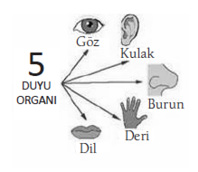
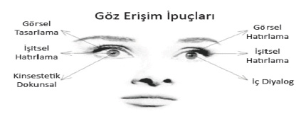
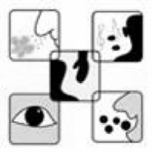
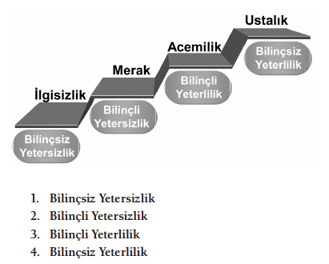

Veriler Beynimize Nasıl Ulaşıyor ve
Beynimizde Nasıl İşleniyor ?

Dış dünyamızdaki veriler beş duyumuz yolu ile beynimize ulaşır. Duyu organlarımız, çevreden gelen uyarıları, duyu sinirleri(nöronlar) aracılığı ile elektro-kimyasal sinyaller olarak beynimize gönderir. Her birimiz dış dünyayı 5 duyumuzla algılıyoruz. Görüyor, işitiyor, duyuyor, tadıyor ve kokluyoruz. “6. Duyu Kanalı” dediğimiz, şu an konumuzun içinde olmayan bir de sezgi duyumuz var.
Uyarıcıların duyu organları tarafından alınıp beyne iletilmesi duyum, İçten ve dıştan gelen uyarıcıların duyumlar aracılığıyla anlamlı hale getirilmesi ise algıdır.
İç ve dış çevreden gelen uyarıcıları bir duyu organınla alıp nöronların aracılığıyla biyokimyasal enerjiye dönüştürerek duyumsaman, duyum sürecini anlatır. Nesne ya da olayları beyninde işleyerek, anlamlı bütünler olarak kavraman ise algı sürecindir. Algı sürecinde bilginin işlenmesini davranışların oluşumunda yeniden ele alacağız.
Duyum, algının bir ön koşuludur. Duyum olmadan algı da olmaz.
Örneğin bir tat almak duyum ise, neyin tadı olduğunu anlamak algıdır. Bir sesi duymak duyum iken, kimin veya neyin sesi olduğunu anlamak algıdır. Duyumda, uyarıcı kaynağını tanımadığın halde algıda uyarıcının kaynağını bilirsin.
Bir şeyi size anlatırken, gördüğüm, dokunduğum ve duyduğum şeyler üzerinden size projeksiyon yaparak anlatacağım. Algı temelli bir dil kullanacağım. Bir kişiye tanıdığınız ama tanıdığınızı belli etmediğiniz bir kişiyi anlattırın. O size kendisini anlatacaktır. Projeksiyon yapar ve kendisi üzerinden şahsı size anlatır.
Duyum basit fizyolojik bir olay, algı ise karmaşık psikolojik bir olaydır. Duyumda uyarıcılar tek tek, algıda ise bir bütün olarak değerlendirilir. Duyum her bireyde aynı işleyişle gerçekleşirken, algıda bireyden bireye farklılık gösteren bir işleyiş vardır.
Duyu organlarımız çevredeki tüm uyarıcıları alamaz. Bir uyarıcının duyum oluşturması için gerekli koşullar şunlardır:
Bazen duyu organlarımız çevredeki uyarıcılara alışkanlık göstererek, onlara tepki vermez hale gelir. Buna,duyusal uyum denir. Duyusal uyumun gerçekleşmesi için: ya uyarıcı sürekli olmalı, ya da uyarıcının enerji düzeyinde bir değişiklik olmamalıdır.
Bazen de duygusal yaşamda tekrar, tekrar karşılaşılan uyarıcıyı organizma belli bir süre sonra kanıksar. Örneğin: Evinde sürekli azarlanan bir çocuk, bir süre sonra azarlanmaya karşı duyarsızlaşarak tepki vermez hale gelir. Sürekli ışık altında kalan insan bir süre sonra ışığa karşı duyarsızlaşır ve rahatsız olmamaya alışır.
Çevrende bulunan çok sayıda uyarıcı nesne, ya da olaydan, bir ya da bir kaçına dikkatini yöneltmene algıda seçicilik diyebilirsin. Algıda seçiciliği etkileyen iç ve dış etkenler vardır.
Dış uyarıcıların algıda seçiciliğini etkilemesinde senin bir rolün yoktur. Çünkü kendi dışında olup biten olaylardan etkileniyorsun.
Örneğin uyarıcının; şiddeti, aşırı zıtlık ya da karşıtlığı, hareketliliği, sürekliliği, tekrarlanması, olağandışılığı, bilindik olması gibi etmenler, algıda seçiciliği etkileyen dış uyarıcılardır.
Uyarıcıya ilişkin; beklentin, ilgin, gereksinimin ve inancın algıda seçiciliği etkileyen iç etmenlerdir.
Günlük yaşamımızda sürekli seçici algılama yaparız. Çevremizdeki uyarıcılardan hangisini seçeceğimiz, öncelikli olarak dikkatimize bağlıdır.
Yabancı ve farklı uyarıcılar dikkat çekicidir. Bireyin beklenti ve ihtiyaçları dikkat çekicidir. Öğrenilmiş ipuçları dikkat çekicidir. Karmaşık uyarıcılar dikkat çekicidir.
Duyu kanalları her birimizde farklı kapasitede çalışır. Bu arada, duyusal görevlerini tam olarak yerine getiremeyenler için de geliştirme becerilerini öğreneceğiz.
Dış uyarıcılardan alınan veriler zihnimizde duyusal deneyimler olarak temsil edilerek hafızamıza kaydediliyor. Hafızamız tarafından kodlanan bu veriler de daha sonra dış uyarıcının zihnimiz içerisindeki temsilini oluşturan tepkilerimizi belirliyor.
Zihnindeki Dünya
Yaşadıklarımız beynimizde kodlanarak beyindeki belli adreslere kaydedilir. Sonradan gözlerimizi kullanarak bu adreslere ulaşabiliriz. NLP de buna göz erişim ipuçları denir.

Belli şeyleri hatırlamak için gözlerinle belli yerlere bakmak durumundasın! İnsanların %70’i geçmiş resimleri hatırlamak için sol yukarıya, %30 ise sağ yukarıya bakar. Ama tamamı yukarı doğru bakarlar. Dokunsal ve içsel duyguları hissedebilmek için aşağı doğru bakarsın. Yukarı bakarak ağlayabilir misin? Niçin bir çocuk ağladığında yukarı bakmasını söyleriz? Ağlayan, depresyon içinde olan insanların genelde aşağıya doğru baktıklarını gözlemişsindir. Kadınlarda durum biraz özeldir. Kadınlar duygulu anlarında makyajlarının akmaması için yukarı bakarak ağlarlar. Böylece duygularını kontrol etmeye çalışırlar. Geçmişte duyduğun bir sese erişmek için kulak hizanda sola doğru bakarsın. Geçmişte sevinçli bir gününde çalmayı düşündüğün enstrümanın sesine erişmek isteyince de, sağ kulağına doğru bakarsın.
Örneğin: “Tren raylarının sesi nasıl duyulurdu?” dediğimde sağ yana bakarsın? Çünkü tasarladığın sese ulaşmaya çalışıyorsun.
“Nasıl bir araban olmasını isterdin?” diye sorsam, sağ yukarıya bakarsın. Çünkü görsel tasarladığın resme ulaşmak istiyorsun.
Örneğin, “Tatile gittiğini düşün. Sıcak kumların üstüne yattığını hayal et, sıcak kumları hisset” dediğimde, sağ aşağı yönde bakarsın. Çünkü dokunsal tasarlama yapıyorsun. Dokunsal hislere, içsel diyaloglara ulaşmaya çalışıyorsun.
Bu bilgileri yukarıdaki şekille karşılaştırman çok yararlı olacaktır. Göz erişim ipuçları insanların görsel, işitsel ve dokunsal duygularını belirlemek için kullanılan bir sistemdir.
NLP’de bu teknik kişilerin sorunlarını anlatırken, görsel bir duruma mı, yoksa işitsel ya da dokunsal bir duruma mı girdiklerini belirlemek için kullanılır. Beşinci bölümde bu teknikten yararlanacağız.
Şimdi, “Aklından ne geçirdiğini söyleyeyim mi?” adlı bir oyun oynayalım.
Sana üç soru soruyorum, sonra bu üç sorudan birini düşünmeni istiyorum. Ben neyi düşündüğünü bulmaya çalışıyorum. Önce sorularımı sorayım:
Oyun başlasın!Sen düşünürken gözlerine bakıyorum. 2. Soru için sağa yana bakmalısın. 1. Soru için sol yukarıya ve 3. Soru için de muhtemelen sol aşağıya ya da sağ aşağıya bakıyor olmalısın.
Şimdi düşündüğün üç şeyden sadece birini tekrar düşün ama bana söyleme. Sadece düşün ve odaklan.
Sen düşünürken ben yeniden gözlerine bakıyorum. Örneğin yukarı bakıyorsan doğal olarak cevabım “Öğretmenini düşündün” oluyor.
Eğer sol yana doğru bakıyorsan; “Şu anda suyun altındaki balonun patlama sesinin nasıl duyulduğunu düşünüyorsun” diyorum.
Eğer aşağıya doğru bakıyorsan da; “Şu an buz gibi bir suyun soğukluğunu düşünüyorsun” diyorum.
Sen de bu oyunu arkadaşlarınla birlikte dene. İlk denemelerinde çok iyi sonuçlar beklemiyorum. Ama ne kadar çok egzersiz yaparsan o kadar az hata yaparsın.
Şimdi konumuza tekrar geri dönelim. Zihnindeki belli bir hatırayı nasıl kodladığının, nasıl temsil ettiğinin farkına varmanı istiyorum. Bunun için kendini rahat hissettiğin bir yerde ve durumda; hafifçe gözlerini kapatıp, geçmişte sana büyük korku veya heyecan yaşatmış olan bir anını düşün. Kendi içine odaklan. Zihninde, nelerin canlanacağına dikkat et.
Şimdi yeniden düşünmeni istiyorum, aklına gelen ilk uyarı ne oldu? Bir görüntü mü canlandı gözünün önünde?

Yoksa olayla ilgili bir müzik veya ses mi?Ya da yaşadığın yoğun bir duygu muydu?
Hissettiğin ilk uyarı; bir görüntü ise sen görsel hafızasını baskın olarak kullanan bir görselsin. Ses ya da müzik ise sen işitsel hafızasını baskın olarak kullanan bir işitselsin. Yoğun bir duygu ise sen dokunsal hafızasını baskın olarak kullanan bir kinestetiksin.
Yaşamış olduğumuz deneyimin zihnimizdeki yapı taşları ve temsil ediliş biçimlerine ve aklımıza gelen ilk uyarıya bağlı olarak bizler üç ayrı düşünce süreci başlatır ve ona uygun düşünürüz.
Görüntülerle, Seslerle ve Duyularımızla
Görüntülerle düşünenlere; Görsel
Seslerle düşünenlere;İşitsel
Hislerle düşünenlere; Dokunsal temsilini baskın kullanan insanlar denir.
Her birimiz diğer duyu kanallarımızı da tabi ki kullanıyoruz. Ancak hangi duyu kanalını daha baskın kullandığın sana özgü temsil sistemini belirliyor. Her birimiz kendimize özgü yaşam geçmişimize göre bazı duyularımızı daha az, bazılarını ise daha yoğun kullanıyoruz. Baskın olarak kullanmış olduğumuz duyu kanalı, bizim tercihli temsil sistemimizdir.
Eğitimde öğrencilerinize, evde çocuğunuza “Sus, konuşma, sakin ol” gibi şeyler söylersiniz değil mi? Çocukların, bilinçaltı zihinlerinde bu komutlar bir ceza olarak algılanır. “Anlatılanları öğrenmeyin” demektir bu komutların anlamı! Bazen de ayaklarını oynatmak istiyor ve siz engelliyorsanız, bilin ki, psikokinesiyoloji dilinde ona; “Öğrenmen için zihninle bedenin arasındaki bağlantıyı koparıyorum” diyorsunuz.
Nörolojik araştırmalar, yatay ve dikey göz hareketlerinin, beynimizin farklı bölgesel etkinlikleri ile sistematik bir ilişki içerisinde olduğunu kanıtlamıştır. Bilincimiz, temsil sistemimiz tarafından kodlanan bilgiye erişmeye çalışırken, bilinçdışı kısa göz hareketlerine neden olur.
NLP de “Göz Erişim İpuçları” (EyeAccessingCues) olarak adlandırılan bu hareketler, bize karşımızdakinin nasıl düşündüğü ile ilgili ipuçları verir. Kullandığımız duyusal kaynaklı sözcükler de kişinin tercihli temsil sistemi hakkında bize önemli bilgiler verir! Görsel insanların kullandıkları sözcükler görsel ağırlıkta, işitsel insanların işitsel ağırlıkta ve dokunsal insanların ise dokunsal ağırlıkta olur.
Denemeni istediğim etkili bir çalışmayı paylaşmak istiyorum; önümüzdeki birkaç gün içinde konuştuğun kişileri dinle ve en çok kullandıkları kelime türlerini belirle. Bunu bir gözlem yapar gibi yap, ama onlar fark etmesin. Sonra birkaç gün aynı tür kelimeleri kullanarak onlarla konuş. İletişimde fark ne oldu?
Beraber olduğun herkesin dünyasına, onların tarzında konuşarak girebilirsin! Çünkü harita bölgenin kendisi değildir. Bu durum uyguladığın ahengin bir sonucudur.
Görsel Temsilini Baskın Kullanan İnsanlar:
Görüntülerle düşünür, görsel bellek kullanırlar. Bu yüzden hızlı konuşurlar. TV ve Bilgisayarın günümüzdeki baskın kullanımı onların toplumdaki yaygınlığını % 60 gibi bir rakama yükseltmiştir. Yukarı bakarak ve hızlı yürürler. Sığ ve sık nefes alırlar. Gözlerini genelde alın hizasında kullanırlar. Görsellerin ağırlıklı olarak kullandıkları sözcük örnekleri şunlardır;
İşitsel Temsilini Baskın Kullanan İnsanlar:
Başkalarıyla olduğu kadar kendileriyle de konuşmayı ve dinlemeyi severler. İşitsel bellek kullanırlar. Bu yüzden görsellere göre daha yavaş konuşurlar. Radyonun popüler olduğu dönemler altın çağlarıydı diyebilirim. Bugün toplumda % 20 gibi bir ağırlıkta yer alıyorlar. Konuşmaları ritmik ve melodilidir. Tüm göğüsleriyle nefes alırlar. Gözlerini genelde kulak hizasında kullanırlar. İşitsellerin ağırlıklı olarak kullandıkları sözcük örnekleri şunlardır;
Dokunsal Temsilini Baskın Kullanan İnsanlar:
Gülünce gözlerinin içi de güler, ağladıklarında katıla katıla ağlarlar. Karından, yavaş ve derin nefes alırlar. Dokunsal bellek kullandıklarından konuşmaları tane tane ve yavaştır. Ağır adımlarla ve yere doğru bakarak yürürler. Genelde gözlerini çene hizasında kullanırlar. Dokunsalların ağırlıklı olarak kullandıkları sözcük örnekleri şunlardır;
Bebeklerin duyu kanallarını kullanmaları bana çok ilginç gelir. Çünkü onlar adeta salt sezgidir. Her türlü dışsal veriyi bir sünger gibi emerler. Dokunur, tadar, koklar, bakar ve dinledikten sonra her veriyi doğru kabul edip bilinçaltlarına kaydederler. Bu süreçteki eğitimlerinin özel bir özen gerektirdiğine inanıyorum.
Henüz mantık süzgeçleri gelişmemiş olduğundan her veriyi doğru sayan bebeklerin bilinçaltı kayıtları; onların öz değerlerini, özgüvenlerini ve dolayısıyla kaderlerini belirliyor. Çünkü korkuların, bedensel, zihinsel ve duygusal rahatsızlıkların temelinde bilince çıkamamış sağlıksız bilinçaltı kayıtları vardır.
Bu yüzden çocuğunuzla iletişim kurmak, onun geleceği için çok önemlidir. Esasen, bir bilgiç edasıyla hastasına yaklaşan doktor, bir bilgiç edasıyla öğrencisine yaklaşan öğretmen, bir bilgiç edasıyla sporcusuna yaklaşan teknik direktörün aldıkları tepkiyi ben tahmin edebiliyorum.
Zira iletişimin anlamı, aldığın tepkidir. İletişimin sihri ne söylediğin değil, nasıl söylediğindir. Bu öğreti, karşındaki ile kolayca ortak bir iletişim kanalı kurabilmeni sağlar. Çünkü iletişimde, kullandığımız sözcüklerin anlaşılabilmesi için diğerleri ile ortak bir kanala ihtiyaç duyarız. Kurduğumuz iletişimin etkin olabilmesi frekansların da uyuşuyor olmasına bağlıdır.
Karşımızdakinin temsil sistemini, kullandığı sözcüklerden, kişinin ses tonu gibi işitsel veriler üzerinden, tokalaşırken, elinde hissetmiş olduğun ısı, basınç veya titreşimler gibi dokunsal veriler üzerinden çözümleyebilirsin. Ancak, doğuştan görme engelli bir kişi görsel algı kanalını kullanamayacağından dolayı, dışarıdan gelen bilgileri zihninde görüntüler olarak temsil edemez. Bu yüzden diğer algı kanallarından gelen veriler üzerine odaklanarak, bilgiyi kodladıklarını unutmamalıyız.
Bu çözümlemelerin sonucunda, karşındaki kişi ile hangi kanal ve frekans üzerinden etkin bir bilgi alış verişinde bulunabileceğini anlar, onunla daha etkili, uyumlu ve güven verici bir iletişim kurmayı başarırsın. Böylece tercihli temsil sisteminin dışındaki duyu kanallarını da aktif olarak kullanabilme becerilerini kazanarak kalibrasyon veya öngörü yeteneğini de geliştirmiş olursun.
Kalibrasyon yeteneği farkındalık kazandırır. Farkındalık ne tür tepkiler aldığımızı bize anında geribildirim ( feedback) olarak sunar. Şimdi bir feedback egzersizi yapalım. Biri ile karşılaştığında el sıkışırsın ve sonra da bu deneyimden bir feedback çıkarırsın. Yani tokalaşmanın daha efektif, daha anlatıcı olmasını sağlamak ve karşımızdakinin içinde bulunduğu durumu anlamak demektir bu.
Beyin bilginin, öncelikli duyu kanalımız üzerinden gelmesini tercih ediyor. Bu kanal üzerinden gelen bilgiyi daha doyurucu bulup daha rahat kavrıyor. Tercihli kanal bilgilerini daha kolay aklımızda tutabiliyor, öğrenebiliyor ve ona daha çok güveniyoruz.
Yapılan araştırmalar, başarılı kişilerin ahenk yaratmada büyük becerileri olduğunu göstermiştir. Onlar ister bir öğretmen, ister bir iş adamı, isterse bir dünya lideri olsunlar çok sayıda kişiyi etkileyebilmek için her üç tarzda da etkileyici ve esnektirler.
Her üç tarzda da çekici olmak için herhangi bir doğal hediyeye ihtiyacın yok. Görebiliyor, işitebiliyor ve hissedebiliyorsan bunlar her şey için yeterli olabilir.
İnsan doğası genellikle gerçeklerle yüzleşmeyi sevmiyor. Acı çekmeden gerçeklerle yüzleşmeyi ve onlardan yararlanabilmeyi bilmiyor. Güneşe bakarken, belki ellerinle güneş ışığının sana ulaşmasını engelleyebiliyorsun! Ancak kendini, bir karanlığa mahkûm ettiğinin farkında mısın? Dış dünyayı algılayış biçiminden dolayı, gerçeklerle yüzleşirken güneşi yok sayabildiğini varsayalım. Ancak çok büyük sanıp aşılmaz gibi görünen sorunların karşısında, güneşi kıyas tutmak yerine, yazık ki ellerini kıyas tutarak sorunlarının içinde sıkışıp kalıyorsun.
Algı filtrelerini, tercihli duyu kanalın dışındaki duyu kanallarını ne kadar geliştirirsen karşıdan gelen sözlü veya sözsüz sinyalleri de o denli iyi algılayabilir ve kendi tepkilerini ona göre ayarlayabilir, sorunlarınla daima başa çıkabilirsin.
Öğrenme Aşamaları
Beş Duyumuz beynimizdeki algı filtrelerini oluşturur. Algı filtrelerine ulaşan bilgiler belleğimize daha önceden öğrendiklerimizle ilişki kuracak biçimde yerleştirilir. Burada sınırları algı eşikleri belirler. Bir alıcı organının uyarılabildiği en düşük uyarı düzeyine algı eşiği denir.
Duyu organlarınca algılanıp tanınma sürecini geçen ve gerekli-gereksiz, önemli-önemsiz ayırımına uğratılarak, algıda seçicilik kriterlerine uygun olan bilgiler beynin ilgili birimine aktarılır. Hepimiz aşağıdaki Öğrenme aşamaları sürecinde bilgiyi içselleştiririz.

Tekrarla kazanılan her yeni beceri 21 günde alışkanlığa dönüşüyor. Bir alışkanlığın gelişmesi de 21 günde gerçekleşiyor. Çünkü nöronlar tekrarlanan düşünce süreçleriyle nöronöraljag denilen gelişmiş bir ağı 3 haftada oluşturabiliyorlar. Bu nöronöraljag, ağa ait davranışlar otomatik (Bilinçsiz Yeterli ) hale geldiğinde, bunlara otoyol davranışı adı verilir.
Öğrenmedeki düşünce süreçlerimiz dört aşamalıdır. Şimdi bu aşamalarda beynimizde neler yaşıyoruz ona bakalım:
Bilinçsiz-Yetersizlik
Neyi bilmediğini bile bilmediğin bir süreçtir. Örneğin; araba kullanan insanların hangi süreçte ne yaptığını tam olarak kavrayamazsın. Belki gaza basıp gidiyor, direksiyonu çeviriyor, viraj alıyor değerlendirmesini yaparsın. Konu hakkında bir bilgi ve bilincin yoktur.
Bilinçli-Yetersizlik
Bu süreçte artık kısmen öğrenmeye başlamış ve neyi bilmediğinin bilincindesindir. Kendini nasıl geliştireceğini de bilirsin. Örneğin; araba kullanmayı öğrenmeye karar veriyor ve deniyorsun. Her defasında gaz, debriyaj fren sırasını karıştırıp yetersiz olduğuna kanaat getiriyorsun. Çünkü kullanmayı henüz tam olarak bilmiyorsun.
Bilinçli-Yeterlilik
Bu süreçte neyi ne kadar bildiğini biliyor ve buna göre davranıyorsundur. Bu yüzden yaptığın şeyleri bilinçli ve dikkatli yaparsın. Bilinçli olarak araba kullanmaya başladın. Tüm kullanım bilgilerine sahip olduğun halde neden yavaşsın? Çünkü henüz acemisin!
Bilinçsiz-Yeterlilik
Artık yapman gereken hareketleri aklından geçirmen gerekmiyor. Yapacakların doğal ve otomatik bir hale geldi. Arabayı birkaç saattir kullandığın halde farkında bile değilsin. Nasıl kullandığını düşünmedin bile! Her şeyi doğru sırada ve kendiliğinden yapıyorsun.
Çünkü bilinçaltı zihnin bir otomatik davranış biçimi oluşturdu. Kararlar otomatik pilota geçti.Tıpkı; yürümek, nefes almak, yüzmek veya usta sürücü davranışları gibi… Bildiğimiz konuyu düşünmeyiz. Bilinçaltı otomatik davranış biçimi oluşturur.
Verilerin Belleğe Kaydedilmesi
Dış veriler halinde gelen bilgiyi beş duyu kanalımızla toplayıp hafıza ya da bellek adını verdiğimiz yerlerde depoluyoruz. Bir bilgiyi ne kadar çok duyu kanalını kullanarak depolamışsak sonradan onu hatırlamamız o kadar kolay oluyor. Örneğin; bir şeyin yapılışını görmüşsek, birisi bize anlatmışsa biz de bunu uygulamışsak o bilginin hatırlanması o kadar kolaydır.
Hipokampusu tanırken bilginin belleğe kaydedilmesine kısmen değindik. Sistemin işleyişini şöyle özetleyebilirim; Öğrenme sürecinde duyguların merkezi hipotalamus; yoğun bir duygu ile uyarılırsa, hipokampus yazıcıyı çalıştırıp, “Bu veriler gerekli! Kaydet” komutunu veriyor! Böylece veriler öğrenilen bir bilgi olarak korteksteki hafızaya kaydediliyor. Eğer duyguların şiddeti zayıfsa, hipokampus bu kez, “Demek ki bu bilgi gereksiz, yazıcıyı çalıştırmaya gerek yok! Gereksiz, Kaydetme”, diyor. Bu durumda bilgi anlık hafızada kalabileceği 20 dakika gibi bir süre sonunda unutuluyor, yani bellek boş kalıyor.
Buna göre; Hipokampusu ve duyguların merkezi hipotalamusu nasıl etkilersek, bilgileri o şekilde kalıcı belleğe kaydedebiliriz!
Sistemdeki işleyişi, iki soru ve iki cevap ile açıklayayım:
Birinci sorunun cevabını çok yakın bir tarih olduğu halde unutmuşken, ikinci sorudaki tarih çok daha eski olduğu halde neden, zorlanmadan anımsayabildin!
Orta beynindeki hipokampus; birinci soruyu, “Bu bilgi önemsiz” ikinci soruyu ise, “Bu bilgi önemli” diyerek işaretledi. Yani, 1.Soruda, duygular güçlü uyarılmadığından orta beyindeki hipokampus bu olayı kayda değer bulmayıp beynin yazıcısını çalıştırmadı. 2. sorudaki olay senin için bir dönüm noktası olduğundan duyguların merkezi, hipokampus güçlü bir şekilde uyaracak düzeydeydi. Bu yüzden hipokampus hemen beynin yazıcısını “kaydet” komutuyla çalıştırdı. Bilgi kalıcı belleğe kaydedildiği için de kolayca hatırladın.
Beyin birbirini tamamlayan üç aşamalı bir bellek yapısına sahiptir.
Duyu organlarınca algılanıp algı filtrelerini geçen bilgiler; gerekli, gereksiz, önemli, önemsiz ayırımına uğratılarak, kodlanır ve beyindeki anlık belleğe gelir. Bilgi önceden öğrenilenlerle ilişkilendirilir ve uyarılırsa korteksteki kısa süreli belleğe iletilir.
Eğer bilgi yoğun ilgi altında kodlanır ve tekrarlanırsa korteksteki uzun süreli belleğe kaydedilir. İşte beyindeki öğrenme süreci böyle işliyor.
Örneğin; Çilek meyvesinin varlığını beynine kaydederken,tüm duyu kanallarından gelen bilgileri birbirleri ile ilişkilendirir ve daha önceden öğrendiğin bilgilerinle; renk, şekil, ses, koku, tat, dokunma gibi bir bağ kurarsın değil mi? Artık gözlerin kapalı olduğunda bile, dokunduğun meyvenin kokusundan, şeklinden veya tadından bunun ne tür bir meyve olduğunu anlayabilirsin. Bunu bazen tek bir duyu kanalını kullanarak da yapabilirsin. Örneğin, Sadece koklayarak tanırsın.
Mental Öğrenme Modellemesi
Doğduğun andan itibaren öğrenme sürecin her an gelişerek ve genişleyerek sürer. Her zaman yapılabilecek, bulunacak ve bilinmesi gereken birçok şeyle karşılaşırsın. Bilginin hem birey hem de toplumsal düzeyde bu kadar geniş bir alana yayılması, onun gelişip genişleyebildiğini gösterir. Ancak bilgi, geniş olduğu kadar eksiktir de.
Bilgideki bu büyümenin ve eksikliğin niceliksel ve niteliksel olmak üzere iki boyutu vardır. Niceliksel boyuta göre, yeni bir bilgi daima önceden öğrenilene eklenir. Önceki bilgilerle yenileri ilişkilendirilir ve giderek daha çok şey bilirsin. Daha önce bilmediğin şeyler hakkında yeni şeyler öğrenirken, önceden bir şeyler bildiğin nesneler hakkında daha da bilgilenirsin. Daha, daha çok şey öğrenir ama asla hepsini öğrenemezsin. Bazı konularda eksik olduğundan değil. Herkes için geçerli bir durumdur bu. Bilginin niceliği o kadar büyük ve sonsuz ki…
Bilgi eksikliğinin niteliksel boyutuna gelince; Daha çok şey öğrendikçe, yeni öğrendiklerinin de yeterli olmadığını anlarsın. Yeni öğrendiklerin, daima önceden bildiklerine yeni bir ufuk açar. Bunun sonucunda, eski çıkarsamalarının yanlış veya eksik olduğunu düşünür ve bu kez yeni öğrenmelerin peşine düşersin. Bu kadar yoğun bir öğrenme, klasik ezber yöntemlerine sıkıştırılamaz. İşte sana öğrenme olgusundan keyif alacağın bir öğrenme kalıbı: Adı, Mental Öğrenme!
Hızlı, kolay ve kalıcı öğrenmeye; Mental Öğrenme denir.
Herkes yeni bir bilgiyi öğrenmeye hazırlanırken, öğrenirken ve hatırlarken farklı ve kendine özgü yollar kullanır. Herkesin farklı ve güçlü yanları vardır!
Herkes öğrenebilir. Farklı öğrenme ortamları, kaynakları ve yaklaşımları farklı öğrenme modellerine uyumludur. Burada amacımız beynini etkin kullanarak; hızlı, kolay ve kalıcı bir öğrenmeyi pratik olarak kendimize uyarlayabilmek olacak. Buna modelleme de diyebilirsin.
Şu ana kadar öğrendiklerimizi 3 esaslı bir temel üzerine oturtalım:
İnsanlar genel olarak gördüklerini, duyduklarına oranla daha kolay anımsar! Çok önceden tanıştığın birinin yüzünü hatırladığın halde, neden ismini hatırlayamadığını bir düşün. Temsil sistemi görselliğe uzak birisi olabilirsin. Örneğin; işittiklerini daha kolay hatırlıyor, yüzleri daha zor anımsıyorsan Mental Öğrenmenin bu maddesini işitsellik olarak değerlendirebilirsin.
Beyin üzerinde yaptığı etki açısından, gerçek görme ile hayali görme arasında bir fark yoktur. Çünkü hiç yaşamadığı bir deneyimi hayal eden bir kişiyle, bu deneyimi gerçekten yaşayan bir kişi karşılaştırıldığında, ikisinin de beyinlerindeki algının birbiriyle aynı olduğunu söylemiştik.
Birbirleri ile bağlantı kurulan olaylar ve bilgiler daha kolay anımsanmaktadır. Bir bilginin hatırlanabilmesi için, önceden öğrenilen bilgilerle, soru arasında “Ara-Bul-Getir” gibi bir ilişkilendirme yapmak gerekir. Esasında hatırlama için nöronlar arasındaki bağlantıları bulmak, telefonla iletişimde numarayı bulmak gibi bir şeydir.
Şimdi Mental Öğrenmenin bu üç kuralını da içeren bir sonuç çıkaralım:
1-Gördüklerini daha kolay anımsıyorsan, öğreneceğin bilgileri önce “Görsel” hale getir. Eğer baskın bir işitsel isen onları önce zihninde “Seslendir”
2-Beyin açısından gerçek görme ile hayali görme arasında bir fark yoksa, kelimeleri temsil eden görsel resim veya olayları, hayal gücünü kullanarak zihninde canlandır. Bu şekilde olayları gerçekten görmüş, gerçekten yaşamış gibi beynindeki yeni öğrenme yollarını ateşlersin.
3-Son olarak bilgideki en ilginç kelimeyi temsil eden görsel resimle, bilgi arasında ya da ses ile bilgi arasında bir ilişki kur. Bu şekilde zihninde canlandırma yaparak hipokampusun güçlü bir şekilde uyarılmasını sağlamış olursun. Böylece bilginin uzun süreli belleğe kaydedilmesi için gerekli komutun kortekse ulaşması da sağlanmış olur.
Öğrenmenin içine; somut bir resim ile soyut hayal gücünü eklediğinden beynin hem sağ hem de sol lobunu aktif olarak öğrenme içine katmış oldun. Böylece kalıcı bir öğrenme gerçekleştirdin. Önceden öğrenilmiş bilgilerle bağlantılar kurduğundan hatırlayabilmek için otoyollar açtın. Görsellik ve bağlantısallığı zihninde canlandırdığın için uyanık kaldın. Bunları kendine uyarladığından öğrenme sana özgü bir modelleme oldu.
Başlangıçta bilindik basit olayları test için kullanarak modellemeyi alışkanlık haline getirebilirsin. Bu denemelerden kısa bir süre sonra, Mental Öğrenme modelini otonom biçimde kullandığına tanık olacaksın.
Her beyin tek ve özel olmasına karşın, tüm beyinlerin ortak bir yapısı vardır. Düşünce üretimi nöron hücrelerini kullanarak yaptığımız resimden başka bir şey değil. Her birimiz dünyayı beş duyumuzla algılıyoruz. Bir insanın istekleriyle kendi arasındaki en büyük engel yine kendisinin yarattığı korkulardır. O halde düşüncenin davranışı etkilemesinden yola çıkarak korkuların, gerçekte birer korkuluk olduğunu da anlıyoruz. Çünkü korkularımız zihnimizdeki içsel temsile dayalı bir sinemanın ürünü.
Başarının önemli dinamiklerinden birisi bilgidir. Bilgi toplamak ve öğrenmek beş duyumuz aracılığıyla gerçekleşiyor. İçsel ve dışsal deneyimlerimizle olan ilişkilerimizi üç duyu kanalımızla kuruyoruz. Bunlara temsil sistemlerimiz deniyor. İnsanların çoğu tercihli temsil sistemini baskın olarak kullanıyor, çünkü diğerlerini kullanırken stres duyuyorlar. Her üç kanalın kullanılmasıyla stres azalırken, kalibrasyon yeteneğimiz ve farkındalığımız artıyor.
Stres azaldığında duygularımızı daha coşkulu yaşayacağımıza göre hipotalamus çoktan bilgileri kaydetmesi için kortekse “Öğrenmem için kaydet” komutunu vermiş oluyor. Buna göre, öğrenmeyi keyif haline getirmenin yolu zihni uyanık tutmaktan geçiyor. Bu yüzden Mental Öğrenme bizi sürekli öğrenmeye yönlendiriyor. Bu kadar öğrenmenin sonunda kazandığımız entelektüelliğimizi; bedensel hazdan kaçınmak, sosyalleşmekten kaçınmak olarak da kodlamamalıyız. Yoksa partnerimiz, “Sıkıcı bir entelektüel yerine, manik depresif ama neşeli birisini tercih ederim” de diyebilir!